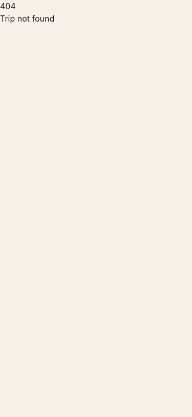
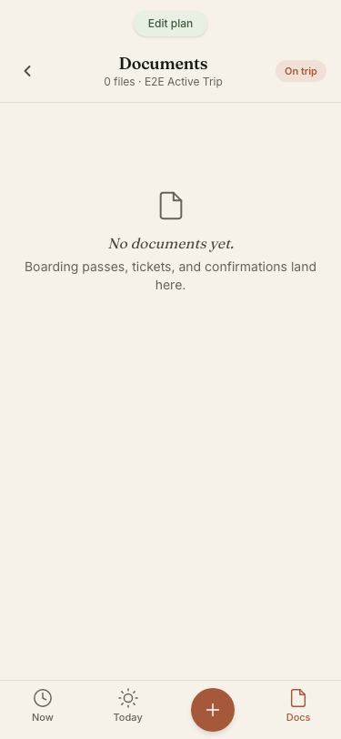
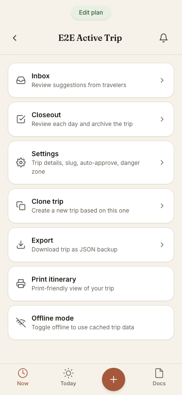
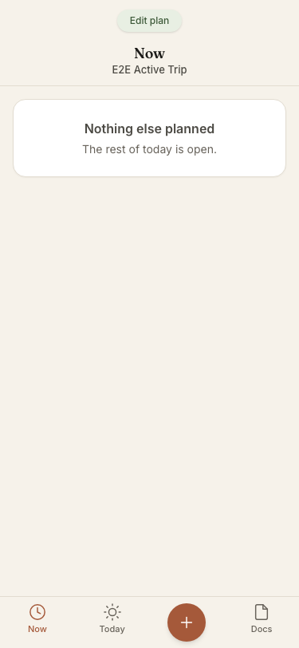
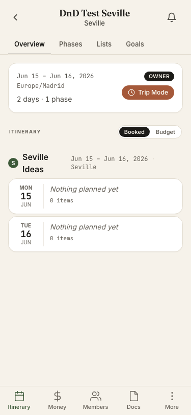
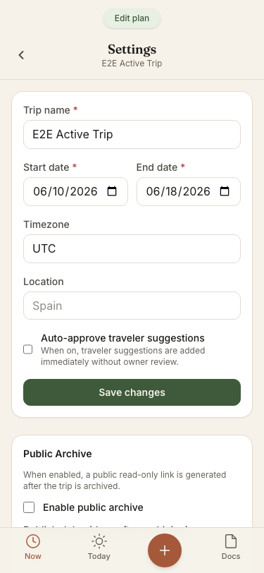

Dual lens: mechanical reachability (M1–M4) + vision fit (V1–V3) · panel: novice / power / code / designer · 44 task-path scenarios
"I want to…" intents walked through the real graph. Personas: N = novice (no hidden gestures, nothing learned-by-exploring), P = power.
P1
WP-A-001
post-tripvisiondesigner lensArchive & Portability
The trip's end is a silent un-flip.
The trip's end is a silent un-flip. Day after end_date, isTripActive() goes false, the app reverts to the 5-tab planning UI, and the trip eventually slides to the 'Past' section of the trips list with zero call to action. No surface anywhere says 'your trip ended — settle up, close out, archive.' Settle-up waits inside Money, closeout hides behind More (owner-only card), archive link behind Settings.
Why it's a gap: V3 seam drop — trip-day→record is the entire Remember pillar's front door and it doesn't exist. Charter D5 pre-agreed this as P1: end_date+1 should render a wrap-up-shaped state (auto-flipped, quiet, group-facing).
Proposed fix: Third derived state: end_date < today && status==active → trip home renders a closing sequence (outstanding debts → closeout w/ memory review → archive decision). Feature-sized: charter routes this to grill→PRD, not a quick issue.
src/lib/trip-mode/activation.ts (isTripActive) + src/lib/shell/components/AppShell.svelte:35-44 + src/routes/(app)/trips/+page.svelte:117-135
P1
WP-A-002
cross-phasemechanicalnovice lensShell
There is no +error.
There is no +error.svelte in the entire route tree. Every thrown error — mistyped trip slug, revoked archive token, archive visited before publish date ('Archive not yet published'), 403s — renders SvelteKit's unstyled default error page with no branding and no way back.
Why it's a gap: M2 one-way street at the worst addresses: /archive/[token] is grandma's front door (she gets the link day one, taps it before publish-day → raw 404 page). Quality bar says 'contributes without being taught'; a dead-end error page teaches her the app is broken.
Proposed fix: Root +error.svelte (branded, 'back to your trips' / 'check the link' recovery actions) + a friendlier pre-publish archive state ('publishes on {date}') instead of a 404.
src/routes/ (no +error.svelte anywhere); thrown from e.g. src/routes/archive/[token]/+page.server.ts:21,25,34 and src/routes/(app)/trips/[slug]/inbox/+page.server.ts:11

P2
WP-A-003
cross-phasemechanicalnovice lensDocuments
Documents page back button is backHref="/trips" — it exits to the trips LIST, not the current trip.
Documents page back button is backHref="/trips" — it exits to the trips LIST, not the current trip. Every sibling trip page backs to /trips/{slug}. Docs is a bottom-nav tab in BOTH modes, so this is one of the most-tapped backs in the app.
Why it's a gap: M4 expected-but-missing link / wrong destination. Novice mid-trip: Docs tab → back → suddenly outside the trip, must re-find it. Disorienting exactly when one-handed.
Proposed fix: backHref="/trips/{data.trip.slug}" (or drop the back chevron entirely — it's a top-level tab, tabs don't 'back').
src/routes/(app)/trips/[slug]/documents/+page.svelte:65

P2
WP-A-004
tripvisionnovice lensShell
Offline mode — a Trip-Mode-critical control ("I'm on the plane") — is a manual localStorage toggle buried in More, which is only reachable from the PLANNING nav.
Offline mode — a Trip-Mode-critical control ("I'm on the plane") — is a manual localStorage toggle buried in More, which is only reachable from the PLANNING nav. In Trip Mode there is no path to it. And as a concept, 'toggle offline then reload' is power-user plumbing a novice will never find or understand.
Why it's a gap: V3 seam (planning→trip-day): the control you need mid-trip lives in the other mode. V1: the fallback is screenshots-in-camera-roll (the old stack). NB: Documents already auto-precache on active trips (documents/+page.svelte:45-51), so the artifact half is solved — the toggle governs page/data caching.
Proposed fix: Surface offline status/toggle in Trip Mode (e.g. on Docs tab next to the 'On trip' chip), or make page-data caching automatic on active trips like documents already are, demoting the manual toggle to a dev tool.
src/routes/(app)/trips/[slug]/more/+page.svelte:145-176 (offline toggle) + src/lib/shell/nav-tabs.ts:19-29 (trip nav has no More)

P1
WP-A-005
tripvisionnovice lensTrip Mode
Light Replanning (charter D3) has no doors in Trip Mode.
Light Replanning (charter D3) has no doors in Trip Mode. 'Tonight fell through' cannot be answered without a mode switch: the parking lot (the exact answer — phase-scoped ideas) is unreachable from Now/Today/Add; the free-time Focus links only the next planned item; there is no skip/cancel-with-replacement flow. Quick-add for today exists (AddSheet ✓) but choosing among already-captured ideas does not.
Why it's a gap: V3 seam drop on the charter's own boundary: today-scoped replanning must live in Trip Mode (D3), and the two trigger states (free time, skipped item) should open doors proactively (D4). SPEC_BACKLOG lists 'Ideas from Free Time' + 'Inline contextual parking lot' as deferred — charter D4 explicitly promoted this from deferred-nicety to requirement. Now view is interim (#153/#154 Slice B pending) — fold into that work.
Proposed fix: Free-time Focus surfaces phase parking-lot ideas with promote-to-today; skip/cancel on a Today item offers a replacement from the same parking lot. Feature-shaped — Phase 3 decides PRD vs issues riding on #154.
src/routes/(app)/trips/[slug]/now/+page.svelte:32-37 (free-time → NowBetweenThings shows only next item) + src/lib/trip-mode/components/AddSheet.svelte:19-29 (no parking-lot option) + no skip/cancel affordance on Today

P2
WP-A-006
cross-phasemechanicaldesigner lensTrip Mode
Two inconsistencies in Trip Mode entry: (1) the Overview 'Trip Mode' chip navigates to /today while the mode pill toggle lands on /now — two different 'homes' for the same mode; (2) the chip renders unconditionally — on planning-status and PAST trips it still shows, and tapping it lands on 'No itinerary for today / Today doesn't fall within this trip's dates', a dead-ish state that makes the app feel broken pre-trip and post-trip.
Two inconsistencies in Trip Mode entry: (1) the Overview 'Trip Mode' chip navigates to /today while the mode pill toggle lands on /now — two different 'homes' for the same mode; (2) the chip renders unconditionally — on planning-status and PAST trips it still shows, and tapping it lands on 'No itinerary for today / Today doesn't fall within this trip's dates', a dead-ish state that makes the app feel broken pre-trip and post-trip.
Why it's a gap: M4 + designer coherence: one mode, one entry. The unguarded chip contradicts CONTEXT.md ('Trip Mode… available only when trip status is active').
Proposed fix: Gate the chip on isTripActive(trip); point it at /now to match the pill (or both at one agreed home).
src/routes/(app)/trips/[slug]/+page.svelte:92-101 (chip → /today, unguarded) vs src/lib/shell/components/AppShell.svelte:54 (toggle → /now)

P2
WP-A-007
post-tripmechanicalcode lensArchive & Portability
Closeout has no status awareness in either direction: the More card shows (and the wizard fully runs) on a trip that hasn't started — you can mark items 'done' during planning; and when the trip actually ends, nothing more than this same buried card invites you in.
Closeout has no status awareness in either direction: the More card shows (and the wizard fully runs) on a trip that hasn't started — you can mark items 'done' during planning; and when the trip actually ends, nothing more than this same buried card invites you in. Travelers/viewers get NO post-trip surface at all (card is owner/co-owner-only; their settle-up lives unprompted in Money).
Why it's a gap: M4 + V3: the wizard exists but its entry ignores the trip lifecycle it serves. Subsumed by WP-A-001's wrap-up state for the invitation half; the premature-entry half is its own small guard fix.
Proposed fix: Status-gate the card/wizard (active+ended or closed-eligible), and let WP-A-001's wrap-up state be the real entry.
src/routes/(app)/trips/[slug]/more/+page.svelte:54-70 (card: role-gated only) + src/routes/(app)/trips/[slug]/closeout/+page.server.ts:5-18 (load: role guard only, no status guard)
P1
WP-A-008
planningmechanicalcode lensCollaboration
On a trip with auto-approve OFF, a traveler submitting a new item is redirected to /trips/[slug]/inbox — which throws 403 'Only trip owners and co-owners can view the inbox' for travelers.
On a trip with auto-approve OFF, a traveler submitting a new item is redirected to /trips/[slug]/inbox — which throws 403 'Only trip owners and co-owners can view the inbox' for travelers. Combined with WP-A-002 (no error page), the contributor's reward for contributing is an unstyled error screen. Their suggestion DID save; they have no way to know.
Why it's a gap: M2 one-way street + V2 silenced contributor, on the exact flow the review queue exists for. The quality-bar persona (non-technical friend, suggestion mode on) hits this 100% of the time.
Proposed fix: Redirect travelers to the trip home (or day) with a 'Suggestion sent — the organizer will review it' toast; reserve the /inbox redirect for owners approving via ?suggestion=.
src/routes/(app)/trips/[slug]/items/new/+page.server.ts:225 (redirect → /inbox) + src/routes/(app)/trips/[slug]/inbox/+page.server.ts:10-12 (403 for non-owners)
P2
WP-A-009
planningvisionnovice lensCollaboration
A traveler who submits a suggestion has no surface — none — where they can see it exists, is pending, was approved, or was rejected.
A traveler who submits a suggestion has no surface — none — where they can see it exists, is pending, was approved, or was rejected. Rejection is completely silent. Approval is visible only indirectly (item appears).
Why it's a gap: V2 silenced contributor: 'did my idea even go through?' is answered by asking in the group text (V1). D1 says contribution is contextual by design — but context for YOUR pending contribution is nowhere.
Proposed fix: Smallest: 'Your pending suggestions' strip on trip home for travelers (or a suggestion-status notification back to the submitter on approve/reject).
no route or component renders a traveler's own pending suggestions (inbox is owner-403; notifications go to owners on suggestion_added — backend/pb_hooks/notifications.pb.js:56)
P3
WP-A-010
cross-phasemechanicalcode lensShell
TripTabs.
TripTabs.svelte is dead code — superseded by per-page SubTabs arrays. Its tab set (Overview/Phases/Members/Inbox/Settings) is also a fossil of an older IA, confusing for anyone reading the shell.
Why it's a gap: M3 dead chrome. No user impact; maintenance trap (an agent 'fixing nav' could edit the dead file — this audit nearly did).
Proposed fix: Delete the file.
src/lib/shell/components/TripTabs.svelte (zero imports anywhere in src/)
P2
WP-A-011
cross-phasemechanicalnovice lensShell
/account (name + avatar) is reachable ONLY from the trips-list avatar chip.
/account (name + avatar) is reachable ONLY from the trips-list avatar chip. From inside a trip — including the Members page, where you're looking at everyone's avatars and your own row — there is no path to your own profile. AVATARS_PRD made avatars app-wide identity; editing that identity has one door, on a page you skip past.
Why it's a gap: M4 expected-but-missing link. Novice test 'change my avatar' from where avatars are seen → dead end → she asks in the group text (V1-lite).
Proposed fix: Link self-row on Members → /account; optionally an Account card under More.
src/routes/(app)/trips/+page.svelte:37 (only inbound link to /account in the app)
P3
WP-A-012
cross-phasevisiondesigner lensCollaboration
Notifications — the only 'what changed' surface — appear on a seemingly arbitrary subset of pages.
Notifications — the only 'what changed' surface — appear on a seemingly arbitrary subset of pages. Most notably absent from Now (the trip-mode default landing) and from the pages notifications link TO (items, members, inbox).
Why it's a gap: Designer-consistency + V2-lite: 'catch up on what changed' (scenario 42) works only if you happen to be on one of the six pages. Backlog already notes the badge isn't live-updating; placement inconsistency compounds it.
Proposed fix: Render the bell in one consistent chrome slot (NavBar right) on all trip pages, or move it into BottomNav/More as a fixed location.
NotificationBell rendered on 6 surfaces only (trips/[slug], today, today/upcoming, expenses, budget, more) — absent from now (trip-mode home), members, documents, days, items, phases, goals, lists, inbox, settings
P2
WP-A-013
cross-phasemechanicalnovice lensCollaboration
A member cannot leave a trip.
A member cannot leave a trip. 'Remove' is owner-only; there is no 'Leave trip' affordance for travelers/viewers anywhere. MEMBERSHIP_LIFECYCLE_PRD specs self-leave semantics (tombstone, expenses forced to keep — PRD §13) and #133 shipped the removal machinery (formerMembers UI exists), but the self-serve door was never cut.
Why it's a gap: M4: the data model and PRD support it; the UI doesn't. V2-adjacent: the only exit is asking the owner in the group text.
Proposed fix: 'Leave trip' on Members (self-row) reusing the remove/tombstone path with PRD §13 semantics. Backlog-aware: check #133's issue scope before filing as new.
src/routes/(app)/trips/[slug]/members/+page.svelte (Remove forms gated on data.isOwner; no self-leave control)
P1
WP-A-014
cross-phasevisionnovice lensCollaboration
First five minutes: the join/invite front doors are genuinely good (pre-auth context card, inline OTP, placeholder claim), but accept dumps the new member onto the trip Overview with zero orientation — no welcome, no 'here's what this trip is', no 'here's where to say what you want' (goals/swipe/votes are 2-3 taps deep behind sub-tabs she's never seen).
First five minutes: the join/invite front doors are genuinely good (pre-auth context card, inline OTP, placeholder claim), but accept dumps the new member onto the trip Overview with zero orientation — no welcome, no 'here's what this trip is', no 'here's where to say what you want' (goals/swipe/votes are 2-3 taps deep behind sub-tabs she's never seen). D1 scattering is intentional, which makes the missing orientation moment THE onboarding surface.
Why it's a gap: V2 silenced contributor at the moment of maximum intent (just joined, came to weigh in). Charter D2 pre-agreed this as a real gap; Scott notes an open issue exists for the intro experience — Phase 3 should attach to it rather than duplicate.
Proposed fix: Post-join landing state on the Overview (first-visit only): what/who/when + 'add what you're excited about' (goals capture) + 'rate the ideas' (swipe) entry points. Feature-shaped.
src/routes/join/[token]/+page.server.ts:98 + src/routes/invite/[code]/+page.server.ts:97 (accept → redirect /trips/[slug] = Overview, cold)
P3
WP-A-015
planningvisiondesigner lensCollaboration
The swipe deck — a contribution minigame — launches from the Phases sub-tab, a structure-management surface (create/reorder/delete phases).
The swipe deck — a contribution minigame — launches from the Phases sub-tab, a structure-management surface (create/reorder/delete phases). A contributor 'looking for where to weigh in' has no reason to open Phases; an owner managing structure gets a game card. The card itself is good (count + label); its home is odd.
Why it's a gap: Designer IA coherence within D1's contextual-scattering decision (per-surface discoverability is the agreed ceiling — P3). V4_GROUP_INPUT_PRD placed it here deliberately ('launches from a card on the Phases sub-tab') — so this challenges a documented choice; flag, don't presume.
Proposed fix: Candidate: mirror the launch card on Goals (the other contribution surface) or on the post-join landing (WP-A-014). Phase 3 call.
src/routes/(app)/trips/[slug]/phases/+page.svelte:55-67 (swipe launch card on the Phases sub-tab)
P3
WP-A-016
tripvisionnovice lensDocuments
Text confirmation codes live solely on item detail; the Documents tab — literally named where a novice looks for 'my confirmation' — shows files only, with no hint that codes exist elsewhere.
Text confirmation codes live solely on item detail; the Documents tab — literally named where a novice looks for 'my confirmation' — shows files only, with no hint that codes exist elsewhere.
Why it's a gap: V1-lite: mid-trip 'what's the hotel code' → Docs tab → not there → email (old stack). Domain model (Document=artifact, codes=item field) is sound per ADR/PRD; the NAV doesn't bridge the novice's mental model.
Proposed fix: Smallest: item rows in the Documents list also surface that item's codes (read-only chips), or an explainer line. Keep the model; bridge the lookup.
src/routes/(app)/trips/[slug]/items/[itemId]/+page.svelte:131 (confirmation_codes on item detail only); documents page shows artifacts only
P2
WP-A-017
planningvisionpower lensItinerary
'Add MY flight and see how it lines up with everyone else's' has no answer.
'Add MY flight and see how it lines up with everyone else's' has no answer. Items carry no member association (paid_by/booked_by are unused ghosts per CARD_CONTENT_SPEC); a 'flights' view across members doesn't exist. Groups arriving separately — the normal case for friends-joining-trips — coordinate arrivals in the group text or a spreadsheet.
Why it's a gap: V1 forces the old stack for a planning job squarely inside the vision ('plans the itinerary together'). Not in SPEC_BACKLOG — a genuine unsequenced gap.
Proposed fix: Feature-shaped: per-member flight items + an arrivals/departures lineup view (could be a Lists-style projection). Phase 3: PRD-or-defer decision.
no surface; flights are plain items (one per creator), no member association or comparison view
P2
WP-A-018
tripvisionnovice lensMoney
Mid-trip money has one-way flow: you can ADD an expense from Trip Mode (AddSheet → expenses?action=add ✓) but you cannot SEE anything — 'how are we doing on budget', 'what did today cost', 'who's owed what' all require switching to Planning Mode and tapping Money.
Mid-trip money has one-way flow: you can ADD an expense from Trip Mode (AddSheet → expenses?action=add ✓) but you cannot SEE anything — 'how are we doing on budget', 'what did today cost', 'who's owed what' all require switching to Planning Mode and tapping Money. During the trip is exactly when spending happens.
Why it's a gap: V1: the glance you can't get is what Splitwise's widget gives — the old stack returns. Charter D3's boundary covers itinerary edits, not money visibility; this is an unowned seam.
Proposed fix: Candidates: budget/balance line on Today (after the timeline), or Day-Wrapped stats (already in backlog as 'Day Wrapped Stats — items/distance/spent'). Phase 3 picks the surface; cite backlog entry.
src/lib/shell/nav-tabs.ts:19-29 (trip nav: Now/Today/Add/Docs — no Money); AddSheet covers add-expense only
P2
WP-A-019
post-tripvisionnovice lensArchive & Portability
Sharing the archive is findable-but-hostile: the link exists only in Settings as a relative path in a code block — no absolute URL, no copy button, no share sheet; and finishing closeout (the natural 'now share it' moment) redirects silently to the trip home with no link handoff.
Sharing the archive is findable-but-hostile: the link exists only in Settings as a relative path in a code block — no absolute URL, no copy button, no share sheet; and finishing closeout (the natural 'now share it' moment) redirects silently to the trip home with no link handoff. Pre-publish, the link 404s (see WP-A-002) with no 'publishes on {date}' state.
Why it's a gap: V3 record-seam: the Remember pillar's public output is minted but never handed to you. Novice 'share with grandma' = copy a <code> fragment and hand-assemble a URL.
Proposed fix: Copy-link button with absolute URL in Settings; archive-link card in the closeout summary / wrap-up state (WP-A-001); friendly pre-publish state.
src/routes/(app)/trips/[slug]/settings/+page.svelte:171 (share path as raw <code>, relative, no copy button) + closeout finish → redirect trip home (closeout/+page.server.ts:118, no link moment)

P3
WP-A-020
post-tripvisionpower lensArchive & Portability
Scenario 39 ('family does the trip themselves'): the archive is a beautiful dead end for non-members — no 'use as template', no export, and clone/import require membership.
Scenario 39 ('family does the trip themselves'): the archive is a beautiful dead end for non-members — no 'use as template', no export, and clone/import require membership. The trip's plan can be read but not reused by the people it's shared with.
Why it's a gap: Vision-edge: 'shareable enough that the trip lives on' arguably stops at reading. Replication-for-strangers may be beyond the one job — flag for an explicit intentional/deferred call rather than assume.
Proposed fix: If wanted: 'Download plan (JSON)' on the archive page (PII-stripped, reuses export) + import-on-signup. Phase 3: intentional vs prd.
src/routes/archive/[token]/+page.svelte (read-only; no template/replicate path); clone+export are member-only
P3
WP-A-021
planningmechanicalnovice lensShell
items/new back-chevron always points to the trip Overview, even when entered from a specific day (?day=) — back doesn't return where you came from.
items/new back-chevron always points to the trip Overview, even when entered from a specific day (?day=) — back doesn't return where you came from. (Successful submit DOES redirect to the day; it's the back/cancel path that teleports.)
Why it's a gap: M4 wrong-back. Minor disorientation, frequent surface.
Proposed fix: Derive backHref from ?day= when present (mirror the submit redirect logic).
src/routes/(app)/trips/[slug]/items/new/+page.svelte:57 (backHref fixed to trip home, ignores ?day= context)
P3
WP-A-022
cross-phasemechanicalcode lensShell
View-transition classifier's bottomNavRoutes omits trip-mode tabs (now/today/documents) — tab-to-tab hops in Trip Mode animate as drill-down/up instead of lateral tab transitions.
View-transition classifier's bottomNavRoutes omits trip-mode tabs (now/today/documents) — tab-to-tab hops in Trip Mode animate as drill-down/up instead of lateral tab transitions.
Why it's a gap: M4-cosmetic: stale set from before Trip Mode nav landed.
Proposed fix: Add the trip-mode tab routes to the set.
src/routes/(app)/+layout.svelte:8-14 (bottomNavRoutes set: planning tabs only)
P3
WP-A-023
cross-phasevisiondesigner lensItinerary
Settings renders the complete editable form — including the danger zone — for viewers and travelers; only on submit does the server 403.
Settings renders the complete editable form — including the danger zone — for viewers and travelers; only on submit does the server 403. A non-owner can fill out a whole form before learning they never could.
Why it's a gap: Designer/novice: capability should be visible before effort. (Server enforcement itself is correct — UI-only gap.)
Proposed fix: Read-only render (or hide danger zone + disable inputs) for non-owner/co-owner.
src/routes/(app)/trips/[slug]/settings/+page.svelte (full form + danger zone render for all roles; actions 403 server-side only, settings/+page.server.ts:38-41)
P3
WP-A-024
tripvisionpower lensShell
Print path exists (More → Print itinerary) but is planning-nav-only — no path from Trip Mode, and it prints the page you're on (More), relying on print.
Print path exists (More → Print itinerary) but is planning-nav-only — no path from Trip Mode, and it prints the page you're on (More), relying on print.css to restyle; 'paper copy of today' on the road requires mode-switch + knowing the card exists.
Why it's a gap: V1-lite, power persona. Low frequency; works when found.
Proposed fix: Verify what actually prints (dogfood); consider print from day view / Today.
src/routes/(app)/trips/[slug]/more/+page.svelte:127-143 (Print itinerary = window.print() in More; print.css exists in src/lib/shell)
P3
WP-A-025
planningmechanicalcode lensItinerary
Trip-mode routes (/now, /today, /today/upcoming) load for ANY trip status via deep link — planning or long-past trips render trip-mode views with the planning bottom-nav, a chimera state nav can't normally reach (but the unguarded Overview chip, WP-A-006, links straight into).
Trip-mode routes (/now, /today, /today/upcoming) load for ANY trip status via deep link — planning or long-past trips render trip-mode views with the planning bottom-nav, a chimera state nav can't normally reach (but the unguarded Overview chip, WP-A-006, links straight into).
Why it's a gap: M4: nav and loaders disagree about when Trip Mode exists. Harmless today; trap as Trip Mode grows (e.g. wrap-up state will key off the same predicates).
Proposed fix: Cheap: fold into WP-A-006's chip gating. Stricter: loader redirect to trip home when !isTripActive (decide whether read-only future/past peeking is wanted — scenario 24 says yes for active trips).
src/routes/(app)/trips/[slug]/now/+page.server.ts, today/+page.server.ts (no isTripActive guard)
view raw JSON
{
"findings": [
{
"id": "WP-A-001",
"phase": "post-trip",
"context": "Archive & Portability",
"axis": "vision",
"severity": "P1",
"lens": "designer",
"where": "src/lib/trip-mode/activation.ts (isTripActive) + src/lib/shell/components/AppShell.svelte:35-44 + src/routes/(app)/trips/+page.svelte:117-135",
"what": "The trip's end is a silent un-flip. Day after end_date, isTripActive() goes false, the app reverts to the 5-tab planning UI, and the trip eventually slides to the 'Past' section of the trips list with zero call to action. No surface anywhere says 'your trip ended — settle up, close out, archive.' Settle-up waits inside Money, closeout hides behind More (owner-only card), archive link behind Settings.",
"why": "V3 seam drop — trip-day→record is the entire Remember pillar's front door and it doesn't exist. Charter D5 pre-agreed this as P1: end_date+1 should render a wrap-up-shaped state (auto-flipped, quiet, group-facing).",
"fix": "Third derived state: end_date < today && status==active → trip home renders a closing sequence (outstanding debts → closeout w/ memory review → archive decision). Feature-sized: charter routes this to grill→PRD, not a quick issue.",
"disposition": "prd — docs/TRIP_WRAPUP_PRD.md, issue #195"
},
{
"id": "WP-A-002",
"phase": "cross-phase",
"context": "Shell",
"axis": "mechanical",
"severity": "P1",
"lens": "novice",
"where": "src/routes/ (no +error.svelte anywhere); thrown from e.g. src/routes/archive/[token]/+page.server.ts:21,25,34 and src/routes/(app)/trips/[slug]/inbox/+page.server.ts:11",
"what": "There is no +error.svelte in the entire route tree. Every thrown error — mistyped trip slug, revoked archive token, archive visited before publish date ('Archive not yet published'), 403s — renders SvelteKit's unstyled default error page with no branding and no way back.",
"why": "M2 one-way street at the worst addresses: /archive/[token] is grandma's front door (she gets the link day one, taps it before publish-day → raw 404 page). Quality bar says 'contributes without being taught'; a dead-end error page teaches her the app is broken.",
"fix": "Root +error.svelte (branded, 'back to your trips' / 'check the link' recovery actions) + a friendlier pre-publish archive state ('publishes on {date}') instead of a 404.",
"disposition": "issue #171 (filed 2026-06-12; dup #185 closed 2026-06-12; archive-publish slice → #195)",
"screenshot": "10-error-bad-slug.png"
},
{
"id": "WP-A-003",
"phase": "cross-phase",
"context": "Documents",
"axis": "mechanical",
"severity": "P2",
"lens": "novice",
"where": "src/routes/(app)/trips/[slug]/documents/+page.svelte:65",
"what": "Documents page back button is backHref=\"/trips\" — it exits to the trips LIST, not the current trip. Every sibling trip page backs to /trips/{slug}. Docs is a bottom-nav tab in BOTH modes, so this is one of the most-tapped backs in the app.",
"why": "M4 expected-but-missing link / wrong destination. Novice mid-trip: Docs tab → back → suddenly outside the trip, must re-find it. Disorienting exactly when one-handed.",
"fix": "backHref=\"/trips/{data.trip.slug}\" (or drop the back chevron entirely — it's a top-level tab, tabs don't 'back').",
"disposition": "covered by #197 (WP-B-012 extends it — the Documents back-exit is in the nav-coherence bundle)",
"screenshot": "05-documents.png"
},
{
"id": "WP-A-004",
"phase": "trip",
"context": "Shell",
"axis": "vision",
"severity": "P2",
"lens": "novice",
"where": "src/routes/(app)/trips/[slug]/more/+page.svelte:145-176 (offline toggle) + src/lib/shell/nav-tabs.ts:19-29 (trip nav has no More)",
"what": "Offline mode — a Trip-Mode-critical control (\"I'm on the plane\") — is a manual localStorage toggle buried in More, which is only reachable from the PLANNING nav. In Trip Mode there is no path to it. And as a concept, 'toggle offline then reload' is power-user plumbing a novice will never find or understand.",
"why": "V3 seam (planning→trip-day): the control you need mid-trip lives in the other mode. V1: the fallback is screenshots-in-camera-roll (the old stack). NB: Documents already auto-precache on active trips (documents/+page.svelte:45-51), so the artifact half is solved — the toggle governs page/data caching.",
"fix": "Surface offline status/toggle in Trip Mode (e.g. on Docs tab next to the 'On trip' chip), or make page-data caching automatic on active trips like documents already are, demoting the manual toggle to a dev tool.",
"disposition": "prd — docs/OFFLINE_PRD.md, issue #203",
"screenshot": "06-more.png"
},
{
"id": "WP-A-005",
"phase": "trip",
"context": "Trip Mode",
"axis": "vision",
"severity": "P1",
"lens": "novice",
"where": "src/routes/(app)/trips/[slug]/now/+page.svelte:32-37 (free-time → NowBetweenThings shows only next item) + src/lib/trip-mode/components/AddSheet.svelte:19-29 (no parking-lot option) + no skip/cancel affordance on Today",
"what": "Light Replanning (charter D3) has no doors in Trip Mode. 'Tonight fell through' cannot be answered without a mode switch: the parking lot (the exact answer — phase-scoped ideas) is unreachable from Now/Today/Add; the free-time Focus links only the next planned item; there is no skip/cancel-with-replacement flow. Quick-add for today exists (AddSheet ✓) but choosing among already-captured ideas does not.",
"why": "V3 seam drop on the charter's own boundary: today-scoped replanning must live in Trip Mode (D3), and the two trigger states (free time, skipped item) should open doors proactively (D4). SPEC_BACKLOG lists 'Ideas from Free Time' + 'Inline contextual parking lot' as deferred — charter D4 explicitly promoted this from deferred-nicety to requirement. Now view is interim (#153/#154 Slice B pending) — fold into that work.",
"fix": "Free-time Focus surfaces phase parking-lot ideas with promote-to-today; skip/cancel on a Today item offers a replacement from the same parking lot. Feature-shaped — Phase 3 decides PRD vs issues riding on #154.",
"disposition": "prd — docs/TRIP_REPLANNING_PRD.md, issue #166 (absorbs #121 + #154, both closed 2026-06-12)",
"screenshot": "03-now.png"
},
{
"id": "WP-A-006",
"phase": "cross-phase",
"context": "Trip Mode",
"axis": "mechanical",
"severity": "P2",
"lens": "designer",
"where": "src/routes/(app)/trips/[slug]/+page.svelte:92-101 (chip → /today, unguarded) vs src/lib/shell/components/AppShell.svelte:54 (toggle → /now)",
"what": "Two inconsistencies in Trip Mode entry: (1) the Overview 'Trip Mode' chip navigates to /today while the mode pill toggle lands on /now — two different 'homes' for the same mode; (2) the chip renders unconditionally — on planning-status and PAST trips it still shows, and tapping it lands on 'No itinerary for today / Today doesn't fall within this trip's dates', a dead-ish state that makes the app feel broken pre-trip and post-trip.",
"why": "M4 + designer coherence: one mode, one entry. The unguarded chip contradicts CONTEXT.md ('Trip Mode… available only when trip status is active').",
"fix": "Gate the chip on isTripActive(trip); point it at /now to match the pill (or both at one agreed home).",
"disposition": "issue #204 (chip gate + /now target + loader guard; bundles A-025)",
"screenshot": "08-overview-upcoming-chip.png"
},
{
"id": "WP-A-007",
"phase": "post-trip",
"context": "Archive & Portability",
"axis": "mechanical",
"severity": "P2",
"lens": "code",
"where": "src/routes/(app)/trips/[slug]/more/+page.svelte:54-70 (card: role-gated only) + src/routes/(app)/trips/[slug]/closeout/+page.server.ts:5-18 (load: role guard only, no status guard)",
"what": "Closeout has no status awareness in either direction: the More card shows (and the wizard fully runs) on a trip that hasn't started — you can mark items 'done' during planning; and when the trip actually ends, nothing more than this same buried card invites you in. Travelers/viewers get NO post-trip surface at all (card is owner/co-owner-only; their settle-up lives unprompted in Money).",
"why": "M4 + V3: the wizard exists but its entry ignores the trip lifecycle it serves. Subsumed by WP-A-001's wrap-up state for the invitation half; the premature-entry half is its own small guard fix.",
"fix": "Status-gate the card/wizard (active+ended or closed-eligible), and let WP-A-001's wrap-up state be the real entry.",
"disposition": "prd — docs/TRIP_WRAPUP_PRD.md, issue #195"
},
{
"id": "WP-A-008",
"phase": "planning",
"context": "Collaboration",
"axis": "mechanical",
"severity": "P1",
"lens": "code",
"where": "src/routes/(app)/trips/[slug]/items/new/+page.server.ts:225 (redirect → /inbox) + src/routes/(app)/trips/[slug]/inbox/+page.server.ts:10-12 (403 for non-owners)",
"what": "On a trip with auto-approve OFF, a traveler submitting a new item is redirected to /trips/[slug]/inbox — which throws 403 'Only trip owners and co-owners can view the inbox' for travelers. Combined with WP-A-002 (no error page), the contributor's reward for contributing is an unstyled error screen. Their suggestion DID save; they have no way to know.",
"why": "M2 one-way street + V2 silenced contributor, on the exact flow the review queue exists for. The quality-bar persona (non-technical friend, suggestion mode on) hits this 100% of the time.",
"fix": "Redirect travelers to the trip home (or day) with a 'Suggestion sent — the organizer will review it' toast; reserve the /inbox redirect for owners approving via ?suggestion=.",
"disposition": "refuted (v2 verdict — 403-redirect misattributed; substance moved to WP-B-001 + the WP-A-009 amendment, PRD #202)"
},
{
"id": "WP-A-009",
"phase": "planning",
"context": "Collaboration",
"axis": "vision",
"severity": "P2",
"lens": "novice",
"where": "no route or component renders a traveler's own pending suggestions (inbox is owner-403; notifications go to owners on suggestion_added — backend/pb_hooks/notifications.pb.js:56)",
"what": "A traveler who submits a suggestion has no surface — none — where they can see it exists, is pending, was approved, or was rejected. Rejection is completely silent. Approval is visible only indirectly (item appears).",
"why": "V2 silenced contributor: 'did my idea even go through?' is answered by asking in the group text (V1). D1 says contribution is contextual by design — but context for YOUR pending contribution is nowhere.",
"fix": "Smallest: 'Your pending suggestions' strip on trip home for travelers (or a suggestion-status notification back to the submitter on approve/reject).",
"disposition": "prd — docs/TRIP_CONTRIBUTION_PRD.md, issue #202"
},
{
"id": "WP-A-010",
"phase": "cross-phase",
"context": "Shell",
"axis": "mechanical",
"severity": "P3",
"lens": "code",
"where": "src/lib/shell/components/TripTabs.svelte (zero imports anywhere in src/)",
"what": "TripTabs.svelte is dead code — superseded by per-page SubTabs arrays. Its tab set (Overview/Phases/Members/Inbox/Settings) is also a fossil of an older IA, confusing for anyone reading the shell.",
"why": "M3 dead chrome. No user impact; maintenance trap (an agent 'fixing nav' could edit the dead file — this audit nearly did).",
"fix": "Delete the file.",
"disposition": "issue #178 (filed 2026-06-12)"
},
{
"id": "WP-A-011",
"phase": "cross-phase",
"context": "Shell",
"axis": "mechanical",
"severity": "P2",
"lens": "novice",
"where": "src/routes/(app)/trips/+page.svelte:37 (only inbound link to /account in the app)",
"what": "/account (name + avatar) is reachable ONLY from the trips-list avatar chip. From inside a trip — including the Members page, where you're looking at everyone's avatars and your own row — there is no path to your own profile. AVATARS_PRD made avatars app-wide identity; editing that identity has one door, on a page you skip past.",
"why": "M4 expected-but-missing link. Novice test 'change my avatar' from where avatars are seen → dead end → she asks in the group text (V1-lite).",
"fix": "Link self-row on Members → /account; optionally an Account card under More.",
"disposition": "issue #180 (filed 2026-06-12)"
},
{
"id": "WP-A-012",
"phase": "cross-phase",
"context": "Collaboration",
"axis": "vision",
"severity": "P3",
"lens": "designer",
"where": "NotificationBell rendered on 6 surfaces only (trips/[slug], today, today/upcoming, expenses, budget, more) — absent from now (trip-mode home), members, documents, days, items, phases, goals, lists, inbox, settings",
"what": "Notifications — the only 'what changed' surface — appear on a seemingly arbitrary subset of pages. Most notably absent from Now (the trip-mode default landing) and from the pages notifications link TO (items, members, inbox).",
"why": "Designer-consistency + V2-lite: 'catch up on what changed' (scenario 42) works only if you happen to be on one of the six pages. Backlog already notes the badge isn't live-updating; placement inconsistency compounds it.",
"fix": "Render the bell in one consistent chrome slot (NavBar right) on all trip pages, or move it into BottomNav/More as a fixed location.",
"disposition": "issue #180 (filed 2026-06-12)"
},
{
"id": "WP-A-013",
"phase": "cross-phase",
"context": "Collaboration",
"axis": "mechanical",
"severity": "P2",
"lens": "novice",
"where": "src/routes/(app)/trips/[slug]/members/+page.svelte (Remove forms gated on data.isOwner; no self-leave control)",
"what": "A member cannot leave a trip. 'Remove' is owner-only; there is no 'Leave trip' affordance for travelers/viewers anywhere. MEMBERSHIP_LIFECYCLE_PRD specs self-leave semantics (tombstone, expenses forced to keep — PRD §13) and #133 shipped the removal machinery (formerMembers UI exists), but the self-serve door was never cut.",
"why": "M4: the data model and PRD support it; the UI doesn't. V2-adjacent: the only exit is asking the owner in the group text.",
"fix": "'Leave trip' on Members (self-row) reusing the remove/tombstone path with PRD §13 semantics. Backlog-aware: check #133's issue scope before filing as new.",
"disposition": "issue #206 (self-leave UI; reuses #133 tombstone machinery + lifecycle PRD self-leave semantics)"
},
{
"id": "WP-A-014",
"phase": "cross-phase",
"context": "Collaboration",
"axis": "vision",
"severity": "P1",
"lens": "novice",
"where": "src/routes/join/[token]/+page.server.ts:98 + src/routes/invite/[code]/+page.server.ts:97 (accept → redirect /trips/[slug] = Overview, cold)",
"what": "First five minutes: the join/invite front doors are genuinely good (pre-auth context card, inline OTP, placeholder claim), but accept dumps the new member onto the trip Overview with zero orientation — no welcome, no 'here's what this trip is', no 'here's where to say what you want' (goals/swipe/votes are 2-3 taps deep behind sub-tabs she's never seen). D1 scattering is intentional, which makes the missing orientation moment THE onboarding surface.",
"why": "V2 silenced contributor at the moment of maximum intent (just joined, came to weigh in). Charter D2 pre-agreed this as a real gap; Scott notes an open issue exists for the intro experience — Phase 3 should attach to it rather than duplicate.",
"fix": "Post-join landing state on the Overview (first-visit only): what/who/when + 'add what you're excited about' (goals capture) + 'rate the ideas' (swipe) entry points. Feature-shaped.",
"disposition": "attached to #111 (intro wizard) via comment, no dup (2026-06-12)"
},
{
"id": "WP-A-015",
"phase": "planning",
"context": "Collaboration",
"axis": "vision",
"severity": "P3",
"lens": "designer",
"where": "src/routes/(app)/trips/[slug]/phases/+page.svelte:55-67 (swipe launch card on the Phases sub-tab)",
"what": "The swipe deck — a contribution minigame — launches from the Phases sub-tab, a structure-management surface (create/reorder/delete phases). A contributor 'looking for where to weigh in' has no reason to open Phases; an owner managing structure gets a game card. The card itself is good (count + label); its home is odd.",
"why": "Designer IA coherence within D1's contextual-scattering decision (per-surface discoverability is the agreed ceiling — P3). V4_GROUP_INPUT_PRD placed it here deliberately ('launches from a card on the Phases sub-tab') — so this challenges a documented choice; flag, don't presume.",
"fix": "Candidate: mirror the launch card on Goals (the other contribution surface) or on the post-join landing (WP-A-014). Phase 3 call.",
"disposition": "issue #207 (mirror swipe launch on Goals / post-join)"
},
{
"id": "WP-A-016",
"phase": "trip",
"context": "Documents",
"axis": "vision",
"severity": "P3",
"lens": "novice",
"where": "src/routes/(app)/trips/[slug]/items/[itemId]/+page.svelte:131 (confirmation_codes on item detail only); documents page shows artifacts only",
"what": "Text confirmation codes live solely on item detail; the Documents tab — literally named where a novice looks for 'my confirmation' — shows files only, with no hint that codes exist elsewhere.",
"why": "V1-lite: mid-trip 'what's the hotel code' → Docs tab → not there → email (old stack). Domain model (Document=artifact, codes=item field) is sound per ADR/PRD; the NAV doesn't bridge the novice's mental model.",
"fix": "Smallest: item rows in the Documents list also surface that item's codes (read-only chips), or an explainer line. Keep the model; bridge the lookup.",
"disposition": "issue #205 (codes as read-only chips in Documents)"
},
{
"id": "WP-A-017",
"phase": "planning",
"context": "Itinerary",
"axis": "vision",
"severity": "P2",
"lens": "power",
"where": "no surface; flights are plain items (one per creator), no member association or comparison view",
"what": "'Add MY flight and see how it lines up with everyone else's' has no answer. Items carry no member association (paid_by/booked_by are unused ghosts per CARD_CONTENT_SPEC); a 'flights' view across members doesn't exist. Groups arriving separately — the normal case for friends-joining-trips — coordinate arrivals in the group text or a spreadsheet.",
"why": "V1 forces the old stack for a planning job squarely inside the vision ('plans the itinerary together'). Not in SPEC_BACKLOG — a genuine unsequenced gap.",
"fix": "Feature-shaped: per-member flight items + an arrivals/departures lineup view (could be a Lists-style projection). Phase 3: PRD-or-defer decision.",
"disposition": "prd — docs/ITEM_ASSIGNMENT_PRD.md, issue #210 (reframed: Item Assignment primitive + Flights Smart List; assigned_to was already live; ADR-0011 card-avatar reversal)"
},
{
"id": "WP-A-018",
"phase": "trip",
"context": "Money",
"axis": "vision",
"severity": "P2",
"lens": "novice",
"where": "src/lib/shell/nav-tabs.ts:19-29 (trip nav: Now/Today/Add/Docs — no Money); AddSheet covers add-expense only",
"what": "Mid-trip money has one-way flow: you can ADD an expense from Trip Mode (AddSheet → expenses?action=add ✓) but you cannot SEE anything — 'how are we doing on budget', 'what did today cost', 'who's owed what' all require switching to Planning Mode and tapping Money. During the trip is exactly when spending happens.",
"why": "V1: the glance you can't get is what Splitwise's widget gives — the old stack returns. Charter D3's boundary covers itinerary edits, not money visibility; this is an unowned seam.",
"fix": "Candidates: budget/balance line on Today (after the timeline), or Day-Wrapped stats (already in backlog as 'Day Wrapped Stats — items/distance/spent'). Phase 3 picks the surface; cite backlog entry.",
"disposition": "prd — docs/TRIP_MONEY_PRD.md, issue #211 (Trip-Mode Money tab/summary: spent (pre/on-trip split) vs budget + balance + today, read-only deep-links; folds in P-3 booked-moment expense capture; deps #170/#197)"
},
{
"id": "WP-A-019",
"phase": "post-trip",
"context": "Archive & Portability",
"axis": "vision",
"severity": "P2",
"lens": "novice",
"where": "src/routes/(app)/trips/[slug]/settings/+page.svelte:171 (share path as raw <code>, relative, no copy button) + closeout finish → redirect trip home (closeout/+page.server.ts:118, no link moment)",
"what": "Sharing the archive is findable-but-hostile: the link exists only in Settings as a relative path in a code block — no absolute URL, no copy button, no share sheet; and finishing closeout (the natural 'now share it' moment) redirects silently to the trip home with no link handoff. Pre-publish, the link 404s (see WP-A-002) with no 'publishes on {date}' state.",
"why": "V3 record-seam: the Remember pillar's public output is minted but never handed to you. Novice 'share with grandma' = copy a <code> fragment and hand-assemble a URL.",
"fix": "Copy-link button with absolute URL in Settings; archive-link card in the closeout summary / wrap-up state (WP-A-001); friendly pre-publish state.",
"disposition": "prd — docs/TRIP_WRAPUP_PRD.md, issue #195",
"screenshot": "07-settings-archive.png"
},
{
"id": "WP-A-020",
"phase": "post-trip",
"context": "Archive & Portability",
"axis": "vision",
"severity": "P3",
"lens": "power",
"where": "src/routes/archive/[token]/+page.svelte (read-only; no template/replicate path); clone+export are member-only",
"what": "Scenario 39 ('family does the trip themselves'): the archive is a beautiful dead end for non-members — no 'use as template', no export, and clone/import require membership. The trip's plan can be read but not reused by the people it's shared with.",
"why": "Vision-edge: 'shareable enough that the trip lives on' arguably stops at reading. Replication-for-strangers may be beyond the one job — flag for an explicit intentional/deferred call rather than assume.",
"fix": "If wanted: 'Download plan (JSON)' on the archive page (PII-stripped, reuses export) + import-on-signup. Phase 3: intentional vs prd.",
"disposition": "issue #208 (export from archive + import as new trip; blocked on #174/#173)"
},
{
"id": "WP-A-021",
"phase": "planning",
"context": "Shell",
"axis": "mechanical",
"severity": "P3",
"lens": "novice",
"where": "src/routes/(app)/trips/[slug]/items/new/+page.svelte:57 (backHref fixed to trip home, ignores ?day= context)",
"what": "items/new back-chevron always points to the trip Overview, even when entered from a specific day (?day=) — back doesn't return where you came from. (Successful submit DOES redirect to the day; it's the back/cancel path that teleports.)",
"why": "M4 wrong-back. Minor disorientation, frequent surface.",
"fix": "Derive backHref from ?day= when present (mirror the submit redirect logic).",
"disposition": "issue #178 (filed 2026-06-12)"
},
{
"id": "WP-A-022",
"phase": "cross-phase",
"context": "Shell",
"axis": "mechanical",
"severity": "P3",
"lens": "code",
"where": "src/routes/(app)/+layout.svelte:8-14 (bottomNavRoutes set: planning tabs only)",
"what": "View-transition classifier's bottomNavRoutes omits trip-mode tabs (now/today/documents) — tab-to-tab hops in Trip Mode animate as drill-down/up instead of lateral tab transitions.",
"why": "M4-cosmetic: stale set from before Trip Mode nav landed.",
"fix": "Add the trip-mode tab routes to the set.",
"disposition": "issue #178 (filed 2026-06-12)"
},
{
"id": "WP-A-023",
"phase": "cross-phase",
"context": "Itinerary",
"axis": "vision",
"severity": "P3",
"lens": "designer",
"where": "src/routes/(app)/trips/[slug]/settings/+page.svelte (full form + danger zone render for all roles; actions 403 server-side only, settings/+page.server.ts:38-41)",
"what": "Settings renders the complete editable form — including the danger zone — for viewers and travelers; only on submit does the server 403. A non-owner can fill out a whole form before learning they never could.",
"why": "Designer/novice: capability should be visible before effort. (Server enforcement itself is correct — UI-only gap.)",
"fix": "Read-only render (or hide danger zone + disable inputs) for non-owner/co-owner.",
"disposition": "issue #176 (filed 2026-06-12)"
},
{
"id": "WP-A-024",
"phase": "trip",
"context": "Shell",
"axis": "vision",
"severity": "P3",
"lens": "power",
"where": "src/routes/(app)/trips/[slug]/more/+page.svelte:127-143 (Print itinerary = window.print() in More; print.css exists in src/lib/shell)",
"what": "Print path exists (More → Print itinerary) but is planning-nav-only — no path from Trip Mode, and it prints the page you're on (More), relying on print.css to restyle; 'paper copy of today' on the road requires mode-switch + knowing the card exists.",
"why": "V1-lite, power persona. Low frequency; works when found.",
"fix": "Verify what actually prints (dogfood); consider print from day view / Today.",
"disposition": "issue #209 (remove Print itinerary; never needed, per Scott)"
},
{
"id": "WP-A-025",
"phase": "planning",
"context": "Itinerary",
"axis": "mechanical",
"severity": "P3",
"lens": "code",
"where": "src/routes/(app)/trips/[slug]/now/+page.server.ts, today/+page.server.ts (no isTripActive guard)",
"what": "Trip-mode routes (/now, /today, /today/upcoming) load for ANY trip status via deep link — planning or long-past trips render trip-mode views with the planning bottom-nav, a chimera state nav can't normally reach (but the unguarded Overview chip, WP-A-006, links straight into).",
"why": "M4: nav and loaders disagree about when Trip Mode exists. Harmless today; trap as Trip Mode grows (e.g. wrap-up state will key off the same predicates).",
"fix": "Cheap: fold into WP-A-006's chip gating. Stricter: loader redirect to trip home when !isTripActive (decide whether read-only future/past peeking is wanted — scenario 24 says yes for active trips).",
"disposition": "issue #204 (folded into A-006 loader guard)"
}
]
}